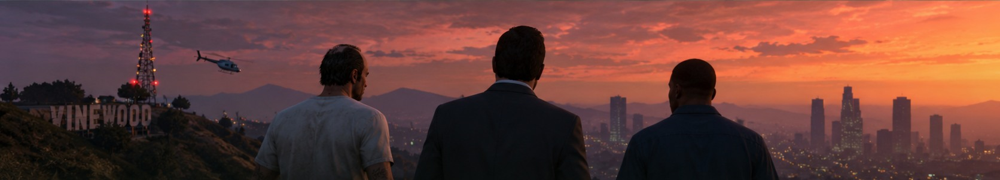

Три головні герої
Кожен персонаж має власні мотиви та особливості.

Історія трьох персонажів, долі яких перетинаються у Лос-Сантосі.
Сюжет GTA V розповідає про Майкла, Франкліна та Тревора. Герої зустрічаються у Лос-Сантосі й разом беруть участь у небезпечних завданнях і пограбуваннях.
Протягом гри користувач може перемикатися між головними персонажами та спостерігати за подіями з різних поглядів.
Кожен персонаж має власні мотиви та особливості.
Місії розкривають історію персонажів і міста.
Командні операції є важливою частиною сюжету.